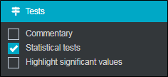
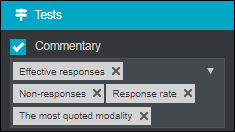
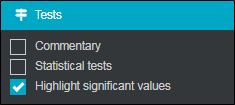
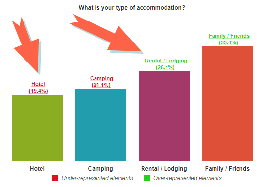

Statistical Tests
 Activate statistical tests
Activate statistical tests
Statistical tests are recommended to determine if the relationship between the variables is significant and to draw reliable conclusions. Statistical tests depend on the variable’ type being studied. To display the statistical tests, proceed as follows:
-
In the advanced tab, tests category.
-
Select statistical tests.

Statistical tests available:
Chi-Square test, Fisher test, correlation coefficient.
| Variables’ types to cross | Process to implement | Statistical test validating the relationship |
| Nominal/Nominal | Cross sorting | Chi-Square test |
| Nominal/Numerical | Analysis of variance | Fisher test |
| Numerical /Numerical | Regression | correlation coefficient |
-
A variable is called nominal or closed if it takes only a limited number of values, called modalities.
The sex (man, woman), the socio-professional category (SPC), the transport mode (TGV, TER, Coral ...), etc.
-
A variable is called numerical if it takes any number as a value.
age, salary, number of trips, etc.
-
A variable is called scale when the respondent is based on a measuring scale (scale questions can also be processed as numerical questions).
EXAMPLE: A satisfaction scale: "Not at all satisfied" to "extremely satisfied".
The Chi-square test is based on a comparison between actual numbers (those observed in the survey) and theoretical numbers (those that would have been obtained if there were no relationship between the two variables). Through this test we examine whether there is an over-representation (or under-representation) of some response modalities pairs.
EXAMPLE: As part of "Train Express" investigation we want to know if the expectations for improvement (price, schedule, quality, etc.) vary, with the used transport type (TGV, TER, Coral …).
The test consists of calculating the sum of the square deviation between the actual and theoretical numbers. The greater the difference, the higher the Chi-square, and the stronger the relationship between the two variables. Inversely, the smaller the differential, the weaker the link between the two variables.
Fisher test and Analysis of variance:
The analysis of variance objective is to establish if, in terms of the values of the numerical variable, the groups of individuals corresponding to the nominal variable’ modalities are significantly different from each other.
EXAMPLE: As part of "Train Express" investigation we want to know if the possession of a subscription (Yes, No) or the purpose of the trips (professional trip, personal trip) influence the monthly trips number.
This analysis implements the following principles:
For each nominal variable’ modalities, the average of the numerical variable conceals a dispersion around this average. The variance (the square of the standard deviation) measures this dispersion called intra-group variance.
From one modality to another, the average varies and reveals another difference, greater or lesser, measured by another variance calculation: variance between modalities or inter-group variance.
Correlation and linear regression:
We want to know if Y variable varies according to another X variable. The technique used makes it possible to obtain a word clouds and a regression row of the two variables.
EXAMPLE: As part of the "Train Express" survey, we want to know if the customer monthly salary determines the number of trips made per month.
The r correlation coefficient indicates the strength and meaning of this possible relationship.
The r correlation coefficient is between -1 and +1. If r is:
-
Close to +1, the correlation is very strong, and the two variables vary in the same direction. When X increases, Y increases;
-
Close to -1, the correlation is very strong, and the variables vary in a reverse direction;
-
Close to 0, the correlation is zero, there is no link between the two variables.
The graphical representation of this possible relation passes through a linear regression row having for equation y = a x + b.
Activate a commentary
The Commentary displays a certain amount of information about the analysis. To display an auto comment, proceed as follows:
-
In the Advanced tab, category Tests, select Commentary.
-
Select the comments you would like to display from the drop-down menu provided (effective responses, non-responses, response rate, etc.).

 Color significant values
Color significant values
Highlight significant values allows you to highlight the significant values. To do so, proceed as follows:
-
In the Advanced tab, tests category, select Highlight significant values.
-
Choose the elements to color from the drop-down menu provided for this purpose: Over-represented or Under-represented (by default both are colored).

-
(optional) You can customize the colors of the significant values, to do this:
-
Select your analysis.
-
Click on the Analysis button, from the Style section.
-
Set the colors to use.
-


EXAMPLE: The over-represented elements are now colored in green, the under-represented elements in red. 

NOTE: It is possible to display what these elements correspond to by displaying the legend.